프롬프트 기록이 있는 것은 생성물 78개 가운데 78개입니다.
비용은 기록에 적힌 값만 더했습니다. 달러 2.363, 크레딧 138.75. 프롬프트 기록(prompts.md)의 사용량·크레딧 줄에 적힌 값만 더했다. 기록이 없는 항목(구독 경로 gpt-image 등)은 0으로 두지 않고 비용 칸을 비워 둠.
목록에서 뺀 것은 3종입니다. design/site/web/cap-*.webp 앱 화면 캡처(스크린샷)라서 생성 이미지가 아님 / design/prototype/home/artboards/* 아트보드 캡처. 생성 이미지가 아님 / design/brand/logo/* 로고는 코드로 만든 SVG이고 PNG는 변환본. 이미지 생성 도구를 쓰지 않음
도구, 모델 파일 수 gpt-image 28 gpt-image-api, gpt-image-2.5-sunburst 38 higgsfield, kling4_0 3 higgsfield, minimax_h3 9
이미지 이름 찾기 종류 이미지69 영상12 다시 만든 것7
도구 gpt-image28 gpt-image-api38 생성 도구 기록 없음3 higgsfield12
81개 중 81개
ill-1.png gpt-image 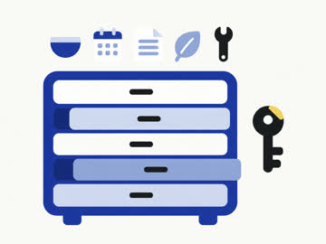
ill-2.png gpt-image 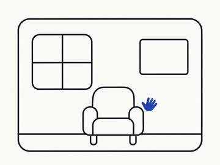
ill-3.png gpt-image img-care.webp gpt-image img-dine-together.webp gpt-image-api, gpt-image-2.5-sunburst 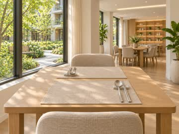
img-dine-window.webp gpt-image img-dine.webp gpt-image-api, gpt-image-2.5-sunburst img-dir.webp gpt-image-api, gpt-image-2.5-sunburst 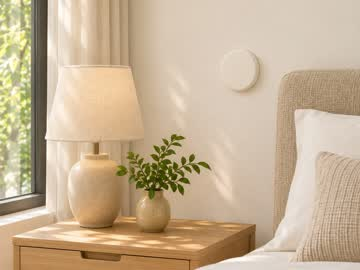
img-fac-call.webp gpt-image img-fac-eve.webp gpt-image-api, gpt-image-2.5-sunburst img-fac-garden.webp gpt-image 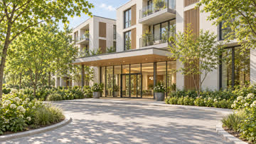
img-fac-gate.webp gpt-image-api, gpt-image-2.5-sunburst img-fac-hall.webp gpt-image img-h1.webp gpt-image-api, gpt-image-2.5-sunburst img-h2.webp gpt-image-api, gpt-image-2.5-sunburst img-h3.webp gpt-image-api, gpt-image-2.5-sunburst img-h4.webp gpt-image-api, gpt-image-2.5-sunburst img-life-exer.webp gpt-image img-life-garden.webp gpt-image img-meal-breakfast.webp gpt-image img-meal-dinner.webp gpt-image 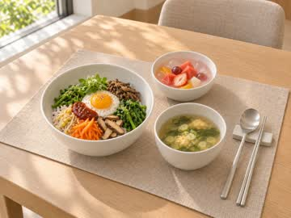
img-meal-special1.webp gpt-image img-meal-special2.webp gpt-image img-room1-bath.webp gpt-image 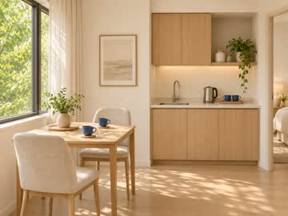
img-room2-kitchen.webp gpt-image img-room2-main.webp gpt-image 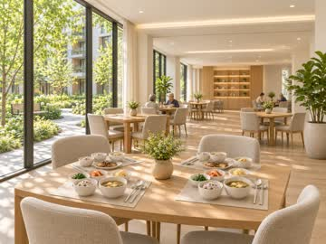
img-s2.webp gpt-image img-s3.webp gpt-image img-safe-contact.webp gpt-image img-safe-phone.webp gpt-image img-safe-visit.webp gpt-image-api, gpt-image-2.5-sunburst img-t1.webp gpt-image-api, gpt-image-2.5-sunburst img-t2.webp gpt-image-api, gpt-image-2.5-sunburst img-t3.webp gpt-image-api, gpt-image-2.5-sunburst 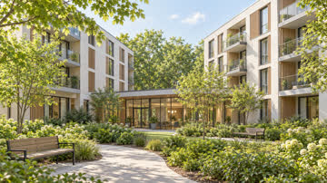
key-bldg.webp gpt-image-api, gpt-image-2.5-sunburst 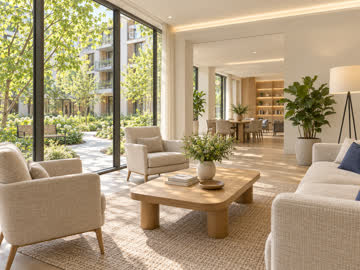
key-int-c.webp gpt-image-api, gpt-image-2.5-sunburst key-int-r.webp gpt-image-api, gpt-image-2.5-sunburst key-meal.webp gpt-image-api, gpt-image-2.5-sunburst key-tone-v1.webp gpt-image-api, gpt-image-2.5-sunburst key-tone.webp gpt-image-api, gpt-image-2.5-sunburst key-uni-v1.webp gpt-image-api, gpt-image-2.5-sunburst key-uni.webp gpt-image-api, gpt-image-2.5-sunburst 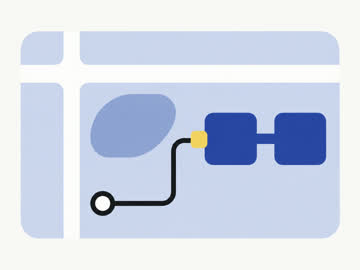
map-1.png gpt-image 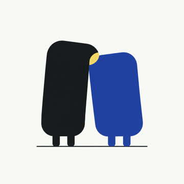
mas-0a.png gpt-image mas-0b.png gpt-image mas-0c.png gpt-image 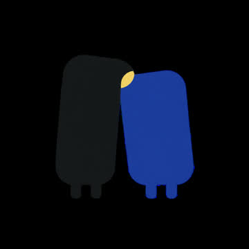
mas-1.png gpt-image per-care-v1.webp gpt-image-api, gpt-image-2.5-sunburst per-care.webp gpt-image-api, gpt-image-2.5-sunburst per-dine-v1.webp gpt-image-api, gpt-image-2.5-sunburst per-dine-v2.webp gpt-image-api, gpt-image-2.5-sunburst per-dine.webp gpt-image-api, gpt-image-2.5-sunburst per-dir-v1.webp gpt-image-api, gpt-image-2.5-sunburst per-dir.webp gpt-image-api, gpt-image-2.5-sunburst per-front-v1.webp gpt-image-api, gpt-image-2.5-sunburst per-front.webp gpt-image-api, gpt-image-2.5-sunburst per-life-v1.webp gpt-image-api, gpt-image-2.5-sunburst per-life.webp gpt-image-api, gpt-image-2.5-sunburst per-sr1-v1.webp gpt-image-api, gpt-image-2.5-sunburst per-sr1.webp gpt-image-api, gpt-image-2.5-sunburst per-sr2-v1.webp gpt-image-api, gpt-image-2.5-sunburst per-sr2.webp gpt-image-api, gpt-image-2.5-sunburst per-sr3-v1.webp gpt-image-api, gpt-image-2.5-sunburst per-sr3.webp gpt-image-api, gpt-image-2.5-sunburst 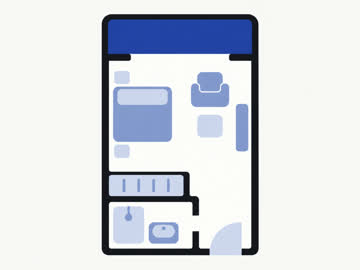
plan-1.png gpt-image 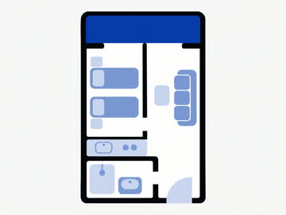
plan-2.png gpt-image 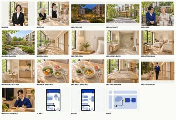
stage2-sheet.webp 기록 없음 vid-bldg.mp4 higgsfield, kling4_0 vid-h1-kling.mp4 higgsfield, kling4_0 vid-h1.mp4 higgsfield, minimax_h3 vid-h2.mp4 higgsfield, minimax_h3 vid-h3-v1.mp4 higgsfield, minimax_h3 vid-h3.mp4 higgsfield, minimax_h3 vid-h4.mp4 higgsfield, minimax_h3 vid-lounge-poster.webp 기록 없음 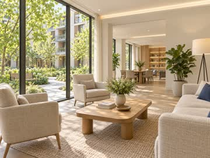
vid-lounge.mp4 higgsfield, minimax_h3 vid-room-poster.webp 기록 없음 vid-room.mp4 higgsfield, kling4_0 vid-safe-visit.mp4 higgsfield, minimax_h3 vid-t1.mp4 higgsfield, minimax_h3 vid-t2.mp4 higgsfield, minimax_h3 조건에 맞는 것이 없습니다. 거름을 풀어 보세요.